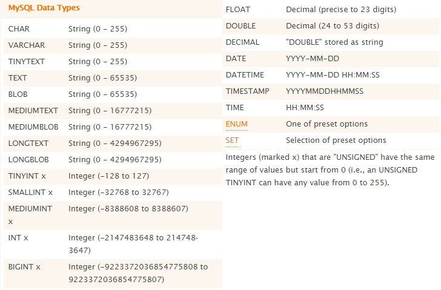

## Databases and MySql</br> #### Key topics for tonight <div style="text-align: left;"> - What are Databases, and why are they important? </br> - Relational vs. Non-Relational Databases </br> - Intro to MySql </div> --- ## Databases Databases are organized collections of data stored electronically, and most commonly allow for our systems to enable data storage past the runtime of the applications that we write as developers. --- ## Databases (cont) #### Why are they important? - Unlike our c# objects which are stored in volatile memory (RAM), and only for as long at the application is running, databases give us a place to store values between runs of the application (as well as between restarting the computer!). - Databases give us more functionality than simiple writing to basic `.txt` files. Databases allow for us to think of our stored data not just as values, but as <span style="color: cadetblue">sets of data</span>. --- ## Databases (cont) #### Common types <div style="text-align: left; font-size: 2rem;"> - <span style="color: cadetblue">Relational Databases</span> - Primarily focuses on storaging data along with constaints on how it relates to other stored data. - <span style="color: cadetblue">Non-Relational Databases</span> (NoSql) - Is an umbrella term used for capturing a number of different long term data storage options, many of which have unique use cases that they are solving for. Below are some examples: - Document databases - Key-value storage - Wide column databases - Graph databases </div> <div class="fragment"> [A good video if you're interested in more!](https://www.youtube.com/watch?v=W2Z7fbCLSTw) </div> --- ## Relational Databases #### Common Relational Databases - MySql - Microsoft SQL Server - PostgreSQL - SQLite --- ## Non-Relational Databases #### Common Non-Relational Databases (NoSql) - MongoDb - Amazon DynamoDb - Redis - Cassandra - Elasticsearch --- ## Databases - Concept Check! 1) What is the primary objective of a database? 2) What are some of the differences between a relational, and non-relational database? 3) What do databases allow us to do that we can't achieve through C#, or JavaScript alone? --- ## Intro to MySql #### What is MySql? - MySql is an open source relational database management system. - It is the primary database that we'll be using here in this course. - MySql has many similarities with other relational database systems, so once you learn one, it's very easy to switch to another! --- ## Intro to MySql #### What is MySql? (cont) - MySql Server and MySql Workbench are not the same! - MySql Server is the database engine that you're able to perform database actions against. - MySql Workbench is the application that gives you a user interface to interact with instances of MySql Server. --- ## Intro to MySql Workbench #### Things to look at (demo) - Connecting to your MySql Instance - Creating / viewing Schema - SQL Query tabs --- ## Intro to MySql #### Basic Actions - CRUD Operations for records in a database - Create - Read - Update - Delete - Joining Data --- ## Intro to MySql #### Vocab <div style="text-align: left; font-size: 2rem;"> - SQL Queries vs. SQL Statements / Commands - <span style="color: cadetblue">SQL Statements / Commands</span> are executable actions taken on a running Sql Instance which may or may not return a value. - <span style="color: cadetblue">SQL Queries</span> are a more specific type of SQL Statement which reads and returns a value (doesn't create or store data). - <span style="color: cadetblue">Table</span> - A set of data elements with defined columns expressing the data stored within. - <span style="color: cadetblue">Record</span> (row element) - A term used to express one particular item within an existing Table. </div> --- ## Intro to MySql #### Data Types  <div class="fragment"> [MySql Cheat Sheet](https://cheatography.com/davechild/cheat-sheets/mysql/) </div> --- ## Intro to MySql #### Create Example ```sql CREATE TABLE People ( Id INT AUTO_INCREMENT PRIMARY KEY, FirstName VARCHAR(45), LastName VARCHAR(45), Birthdate DATETIME ); ``` --- ## Intro to MySql #### Insert Examples ```MySql INSERT INTO People (FirstName, LastName, Birthdate) VALUES ("Ryan", "Shaw", '1994-9-28 00:00:00'); INSERT INTO People (FirstName, LastName, Birthdate) VALUES ("Bob", "Bobby", '2000-1-1 00:00:00'); ``` - Insert a new record into a table. --- ## Intro to MySql #### Query Examples ```MySql # Select all columns and all rows from the People table SELECT * FROM People; # Select the FirstName, and LastName columns and all rows SELECT FirstName, LastName FROM People; # Select all columns from People where the FirstName is "Ryan" SELECT * FROM People WHERE FirstName = "Ryan"; # Select all columns from people where the birthdate is before 1995 SELECT * FROM People WHERE Birthdate < '1995-1-1'; ``` - Return rows from one or more database tables, based on the specifications provided in the select statement. --- ## Intro to MySql #### Alter Example ```MySql # Add a new column titled `FavoriteColor` to the People table ALTER TABLE People ADD FavoriteColor VARCHAR(45); # Remove the column titles `FavoriteColor` from the People table ALTER TABLE People DROP COLUMN FavoriteColor; ``` - Add, delete, or modify columns in an existing table. --- ## Intro to MySql #### Update Example ```MySql UPDATE people SET FavoriteColor = "red" WHERE FirstName = "Bob"; UPDATE people SET FavoriteColor = "red" WHERE Id = 2; ``` - Modifies existing records in a table. --- ## Intro to MySql #### Delete Example ```MySql # Delete the row from the people table with Id 2 DELETE FROM people WHERE Id = 2; # Delete all rows from the people table where the FirstName is "Ryan" DELETE FROM people WHERE FirstName = "Ryan"; ``` - Removes one of more record from a table. - NOTE - It is best practice to do distructive actions via an `Id` rather than value matching like in the above example! --- ## Intro to MySql #### Drop Example ```MySql DROP TABLE people; ``` - Removes an entire table and all of its records. --- ## Intro to MySql - Joins #### What are Joins? - Join statements combine records from two tables based on an expression comparing the data within the two tables. - Joins are one of the primary ways to use our sets of data relationally. - Joins come in a number of different variations, and the correct one to use entirely depends on the what your desired resulting data set is. --- ## Intro to MySql - Joins <img style="width: 62%;" src="images/14-mysql/sql-joins.jpg" /> --- ## Intro to MySql - Joins (cont) #### Example ```sql CREATE TABLE Pets ( Id INT AUTO_INCREMENT PRIMARY KEY, TypeOfAnimal VARCHAR(100), Name VARCHAR(45), OwnerId INT, FOREIGN KEY (OwnerId) REFERENCES People(Id) ); SELECT * FROM Pets; INSERT INTO Pets (TypeOfAnimal, Name, OwnerId) VALUES ("dog", "barkers", 1); INSERT INTO Pets (TypeOfAnimal, Name, OwnerId) VALUES ("cat", "meowster", 1); INSERT INTO Pets (TypeOfAnimal, Name, OwnerId) VALUES ("gecko", "green boi", 1); INSERT INTO Pets (TypeOfAnimal, Name, OwnerId) VALUES ("falcon", "flappy boi", 2); INSERT INTO People (FirstName, LastName, Birthdate) VALUES ("Bob", "Bobby", '2000-1-1 00:00:00'); SELECT * FROM people JOIN pets ON people.Id = pets.OwnerId; ``` --- ## Intro to MySql - Joins (cont) #### Difference between Inner Join, Left Join, and Right Join - Add a new Person without a Matching Pet Record: - The Inner Join will exclude them. - The Right Join will exclude them. - The Left Join will include them. <div class="fragment"> Always think about what resulting data set best fits your use case! That should drive your decision in choose which type of `join` statement to use. </div> --- ## MySql - Concept Check! ```MySql CREATE TABLE People ( Id INT AUTO_INCREMENT PRIMARY KEY, FirstName VARCHAR(45), LastName VARCHAR(45), Birthdate DATETIME ); ``` 1) What's the difference between a MySql Instance, and MySql Workbench? 2) How would I query the above table for all records where the FirstName is equal to "Bob"? 3) What do join statements allow me to do? --- ## Exercises [Link](https://education.launchcode.org/csharp-web-development/chapters/sql-part1/exercises.html) ## Reference links [W3 Schools](https://www.w3schools.com/sql/default.asp) --- ## Questions --- # Studio [Link](https://education.launchcode.org/csharp-web-development/chapters/sql-part1/studio.html)